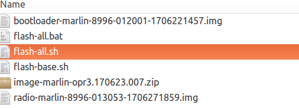
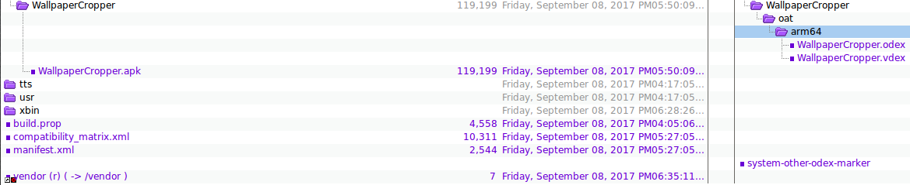

Android8分区表分析
来源: https://pengzhangdev.github.io/android8-partiton-table/
差异简述 ¶
在Android8.0之后, 就存在两套分区表, 分别对应的是A/B系统和非A/B系统.
- 非A/B系统的分区表与之前分区表一样, 没有变化.
- A/B系统的分区表, 是本文的主要描述点.
所谓的A/B系统, 是指设备上存在两套系统, 其分区名也是存在_a 和 _b 的区别.两套系统中, 只有一套为active, 运行状态, 而升级则执行在另一套系统的分区中. 从而达到, 不管升级成功与否, 总有一套系统保证能使用.
而刷机, 包括挂时的分区表中, 都不会添加后缀(_a或_b). 只有在fastboot刷机时, 或者在init挂载时, 找到active的slot, 在指定分区名字后面添加后缀并挂载. 所以, 单纯从源码或者刷机包是无法指定哪些分区被指定为A/B了.
A/B系统带来的好处是:
- 无缝升级, 不需要再进入recovery进行升级.
- 双系统备份, 不管是系统升级失败, 还是被破坏, 都可以切换到另一个系统, 确保用户设备的正常使用.
分区表与其内容¶
下面主要针对pixel设备进行分析, 也就是Android8的源码中marlin设备.
刷机文件和刷机方式 ¶
首先我们看下android官网提供的marlin设备刷机文件. 下面是基带和bootloader的刷机文件.

zip包中的文件如下.

如果单纯按照之前对该zip包文件的理解, 文件名字就是对应的分区名. 然而在A/B系统中, 却并不是如此. 而是按照一定的规则查找A/B分区.
首先, 最先注意到的是两个system大小不一致, 但是这个展开来讲有点多, 我们先把A/B系统刷机的第一个规则介绍以下, 代码在后文介绍第二个规则时可以同时看到.
A/B系统fastboot刷机时, 如果没有指定slot, 则默认刷入的是active的slot, 比如如果bootloader标记为slot A 为active, 则所有分区默认刷入slot A, 也就是说boot_a, system_a 等. 但是, 如果bootloader反馈某个分区没有区分A/B, 则默认直接刷入该分区. 比如 vendor 无区分A/B, 则直接刷入vendor.
然后, 我们关注下system.img和system_other.img, 如果单纯理解为这两个image分别刷入A/B分区, 则大小也完全对应不上. 大小问题, 我们稍后再看, 先研究下system_other.img刷入哪个分区.
static struct {
char img_name[17];
char sig_name[17];
char part_name[9];
bool is_optional;
bool is_secondary;
} images[] = {
{"boot.img", "boot.sig", "boot", false, false},
{"boot_other.img", "boot.sig", "boot", true, true},
{"recovery.img", "recovery.sig", "recovery", true, false},
{"system.img", "system.sig", "system", false, false},
{"system_other.img", "system.sig", "system", true, true},
{"vendor.img", "vendor.sig", "vendor", true, false},
{"vendor_other.img", "vendor.sig", "vendor", true, true},
};
其中 is_secondary 如果为true, 则意味着输入非active slot.
if (!skip_secondary) { // 默认 false if (slot_override != "") { // 刷机时 为 "" secondary = get_other_slot(transport, slot_override); } else { secondary = get_other_slot(transport); // 获取非active slot } if (secondary == "") { if (supports_AB(transport)) { fprintf(stderr, "Warning: Could not determine slot for secondary images. Ignoring.\n"); } skip_secondary = true; } } for (size_t i = 0; i < arraysize(images); ++i) { const char* slot = slot_override.c_str(); if (images[i].is_secondary) { if (!skip_secondary) { slot = secondary.c_str(); //指定为非active slot } else { continue; } } int fd = unzip_to_file(zip, images[i].img_name); if (fd == -1) { if (images[i].is_optional) { continue; } CloseArchive(zip); exit(1); // unzip_to_file already explained why. } fastboot_buffer buf; if (!load_buf_fd(transport, fd, &buf)) { die("cannot load %s from flash: %s", images[i].img_name, strerror(errno)); } auto update = [&](const std::string &partition) { do_update_signature(zip, images[i].sig_name); if (erase_first && needs_erase(transport, partition.c_str())) { fb_queue_erase(partition.c_str()); } flash_buf(partition.c_str(), &buf); /* not closing the fd here since the sparse code keeps the fd around * but hasn't mmaped data yet. The tmpfile will get cleaned up when the * program exits. */ }; do_for_partitions(transport, images[i].part_name, slot, update, false); }
所以, system_other.img 会刷入非active slot, 如果active为a. 则刷入system_b.
在确定system_other.img会刷入另一个slot后, 按照第一个规则(只刷active的slot), 则可以基本猜测, system_other.img中的内容不是用于启动系统的, 或者不是完整系统.

对比, 其内容差异, system_other.img 中, 只有 app 和 priv-app目录.system_other.img的目录中只存在odex和vdex文件, 也就是app优化过的文件, 并且额外多一个文件system-other-odex-marker. 这个文件是个线索, 所以, 初步可以判断, 系统启动后一定会从system_b将这些数据复制到/data/下.
下面我们看下这个文件的作用和如何copy.
on property:sys.cppreopt=requested && property:ro.boot.slot_suffix=_a
mount ext4 /dev/block/bootdevice/by-name/system_b /postinstall ro nosuid nodev noexec
exec - root -- /system/bin/cppreopts.sh /postinstall
# Optional script to copy additional preloaded content to data directory
exec - system system -- /system/bin/preloads_copy.sh /postinstall
umount /postinstall
setprop sys.cppreopt finished
on property:sys.cppreopt=requested && property:ro.boot.slot_suffix=_b
mount ext4 /dev/block/bootdevice/by-name/system_a /postinstall ro nosuid nodev noexec
exec - root -- /system/bin/cppreopts.sh /postinstall
# Optional script to copy additional preloaded content to data directory
exec - system system -- /system/bin/preloads_copy.sh /postinstall
umount /postinstall
setprop sys.cppreopt finished
在启动为任何之一时, 会从另一个slot挂载到/postinstall, 然后使用cppreopts.sh, 将odexvdex文件拷贝到/data/
dalvik-cache/<isa>/xiam, isa是硬件架构(arm64/arm32).
而 preloads_copy.sh 会将system_other中的preloads文件拷贝到/data/preloads/ 目录下.
基于以上system的机制, 在刷机时, 实际只刷入一套系统到active slot中, 然后从另一套系统中的system分区将优化后的dex包拷贝到data分区下,. 与之前的差异是, 连应用的编译和优化都在host端完成, android8的启动速度将非常快.
源码和分区大小 ¶
从recovery的fstab中,我们可以看到的分区表如下:
/dev/block/platform/soc/624000.ufshc/by-name/system_a /dev/block/platform/soc/624000.ufshc/by-name/system_b /dev/block/platform/soc/624000.ufshc/by-name/vendor_a /dev/block/platform/soc/624000.ufshc/by-name/vendor_b /dev/block/platform/soc/624000.ufshc/by-name/userdata /dev/block/platform/soc/624000.ufshc/by-name/boot_a /dev/block/platform/soc/624000.ufshc/by-name/boot_b
但以上分区表在主系统中无法看到, 或者说主系统中只有在vendor下存在fstab, 其他地方并没有, 而vendor下的fstab内容如下, 是由vendor底下的init.{device}.rc 挂载.
/dev/block/platform/soc/624000.ufshc/by-name/system / ext4 ro,barrier=1 wait,slotselect,verify /dev/block/platform/soc/624000.ufshc/by-name/modem /firmware/radio vfat ro,shortname=lower,uid=1000,gid=0,dmask=227,fmask=337,context=u:object_r:firmware_file:s0 wait,slotselect /dev/block/platform/soc/624000.ufshc/by-name/userdata /data ext4 noatime,nosuid,nodev,barrier=1,noauto_da_alloc latemount,wait,check,formattable,fileencryption=ice,quota /dev/block/zram0 none swap defaults zramsize=536870912,max_comp_streams=4 /dev/block/platform/soc/624000.ufshc/by-name/misc /misc emmc defaults defaults /devices/*/xhci-hcd.0.auto/usb* auto vfat defaults voldmanaged=usb:auto
初步判断, 其有用的内容是给vold的挂载信息和基带分区. 但不管怎么看至少缺少了vendor挂载的信息. 而且fstab在vendor分区下, 则意味着vendor的挂载将提前到和boot同个级别. 没错, 新引入了一个early-mounted, 而分区表是在 device tree 中, 也就是启动后, 在 /proc/device-tree/firmware/android/fstab/vendor.
上文的fstab还给我们一个信息, 标志位slotselect, 意味这system分区是分A/B系统的并且由init根据active的slot选择对应的真实分区路径(后缀'_a'或'_b')进行挂载.
我们在看一眼system分区, 其挂载点是 / . 没错, 在Android8之后, system分区的确是被挂载到 /, 也就是说, system分区包含了rootfs, 其内容如下.
total 1724 drwxr-xr-x. 21 root root 4096 Sep 8 18:30 . drwxrwxrwx 25 werther werther 32768 Sep 19 13:15 .. drwxr-xr-x. 2 root root 4096 Sep 8 15:49 acct drwxrwx--x. 2 werther werther 4096 Sep 8 15:49 bt_firmware lrw-r--r--. 1 root root 50 Sep 8 18:30 bugreports -> /data/user_de/0/com.android.shell/files/bugreports lrw-r--r--. 1 root root 11 Sep 8 18:30 cache -> /data/cache lrw-r--r--. 1 root root 13 Sep 8 18:30 charger -> /sbin/charger dr-x------. 2 root root 4096 Sep 8 15:49 config lrw-r--r--. 1 root root 17 Sep 8 18:30 d -> /sys/kernel/debug drwxrwx--x. 2 werther werther 4096 Sep 8 15:49 data lrw-------. 1 root root 23 Sep 8 18:30 default.prop -> system/etc/prop.default drwxr-xr-x. 2 root root 4096 Sep 8 15:49 dev lrw-r--r--. 1 root root 15 Sep 8 18:30 dsp -> /vendor/lib/dsp lrw-r--r--. 1 root root 11 Sep 8 18:30 etc -> /system/etc drwxr-xr-x. 3 root root 4096 Sep 8 15:49 firmware -rwxr-x---. 1 root 2000 1559136 Sep 8 18:11 init -rwxr-x---. 1 root 2000 996 Sep 8 15:49 init.environ.rc -rwxr-x---. 1 root 2000 26830 Sep 8 15:49 init.rc -rwxr-x---. 1 root 2000 141 Sep 8 15:49 init.recovery.marlin.rc -rwxr-x---. 1 root 2000 7623 Sep 8 15:49 init.usb.configfs.rc -rwxr-x---. 1 root 2000 5715 Sep 8 15:49 init.usb.rc -rwxr-x---. 1 root 2000 497 Sep 8 15:49 init.zygote32.rc -rwxr-x---. 1 root 2000 847 Sep 8 15:49 init.zygote64_32.rc drwx------. 2 root root 16384 Sep 8 18:30 lost+found drwxr-xr-x. 2 root werther 4096 Sep 8 15:49 mnt drwxr-xr-x. 2 root root 4096 Sep 8 15:49 oem drwxr-xr-x. 2 root root 4096 Sep 8 15:49 persist drwxr-xr-x. 2 root root 4096 Sep 8 15:49 postinstall drwxr-xr-x. 2 root root 4096 Sep 8 15:49 proc drwxr-xr-x. 3 root root 4096 Sep 8 15:48 res drwxr-xr-x. 2 root root 4096 Sep 8 15:49 root drwxr-x---. 2 root 2000 4096 Sep 8 18:11 sbin lrw-r--r--. 1 root root 21 Sep 8 18:30 sdcard -> /storage/self/primary drwxr-x--x. 2 root 1028 4096 Sep 8 15:49 storage drwxr-xr-x. 2 root root 4096 Sep 8 15:49 sys drwxr-xr-x. 16 root root 4096 Sep 8 18:30 system -rw-r--r--. 1 root root 4849 Sep 8 15:49 ueventd.rc drwxr-xr-x. 2 root 2000 4096 Sep 8 15:49 vendor -rw-r--r--. 1 root root 524 Sep 8 15:50 verity_key
那么, 这些变化是如何做到的, 并且, 为什么system.img中要包含rootfs? 我们在后文会提到.
我们来看下Android官方网站给出的从普通分区切换到A/B分区, 对于分区大小的影响.
| Pixel Partitions Size | A/B | Non-A/B |
|---|---|---|
| Bootloader | 50*2 | 50 |
| Boot | 32*2 | 32 |
| Recovery | 0 | 32 |
| Cache | 0 | 100 |
| Radio | 70*2 | 70 |
| Vendor | 300*2 | 300 |
| System | 2048*2 | 4096 |
| Total | 5000 | 4680 |
从这张表上,我们看到pixel分区的A/B系统包括 bootloader, boot, radio, vendor, system.
分区表改变对系统逻辑的影响¶
这里总结下以上分区表的改变:
- 没有recovery分区和cache分区.
- vendor分区提前挂载(不是在fstab文件中中挂载, 在 device tree中指定)
- 真实分区名字存在
_a和_b后缀.
挂载分区方式改变 ¶
early-mounted代码见 init_first_stage.cpp
在init第一次启动时, 会调用DoFirstStageMount, 和一些环境的配置. 完成后再次运行init, 进入第二阶段的执行. 而第二阶段实际上就是跟以前的Android处理方式一样.
挂载时选择slot的代码见init的DoFirstStageMount
刷机时选择slog的代码见fastboot, 也可见上面贴的代码.
boot包含recovery功能¶
首先, 升级切换成A/B无缝升级, 具体说明请参考recovery8的文档. 但是, recovery的功能并不止是升级, 还包括恢复, 如其名字.
为了支持恢复出厂设置的功能, recovery的功能被集成到了boot中, bootloader在进入recovery的时候, 进的是boot分区, 但是传的参数不包含skip_initramfs.
正常启动到android系统时的启动参数.
skip_initramfs rootwait ro init=/init root="/dev/dm-0 dm=system none ro,0 1 android-verity <public-key-id> <path-to-system-partition>"
这里设置的skip_initramfs, 是通知内核, 跳过boot中的ramdisk. 这个参数是android添加的, 标准内核不支持.
然后我们解析下剩余参数, 主要是root参数. 这里可以看到, root指定的是system分区. 也就是说, 根分区就是以system分区.
然后我们看下启动recovery时的参数.
rootwait init=/init ro
这里因为没指定skip_initramfs, 所以, 会直接读取boot分区中的ramdisk.
进一步的理解就是, boot.img包含的是以前recovery的内容, 功能只有恢复出厂设置. 而原来的boot与system合并为system.img.
编译参数改变¶
https://source.android.com/devices/tech/ota/ab_implement
必须定义存档参数如下:
AB_OTA_UPDATER := true
AB_OTA_PARTITIONS := \
boot \
system \
vendor
*and other partitions updated through update_engine (radio, bootloader, etc.)*
BOARD_BUILD_SYSTEM_ROOT_IMAGE := true
TARGET_NO_RECOVERY := true
BOARD_USES_RECOVERY_AS_BOOT := true
PRODUCT_PACKAGES += \
update_engine \
update_verifier
*For an example, refer to /device/google/marlin/+/android-7.1.0_r1/device-common.mk. You can optionally conduct the post-install (but pre-reboot) dex2oat step described in Compiling. *
必须不定义的参数如下:
BOARD_RECOVERYIMAGE_PARTITION_SIZE
BOARD_CACHEIMAGE_PARTITION_SIZE
BOARD_CACHEIMAGE_FILE_SYSTEM_TYPE